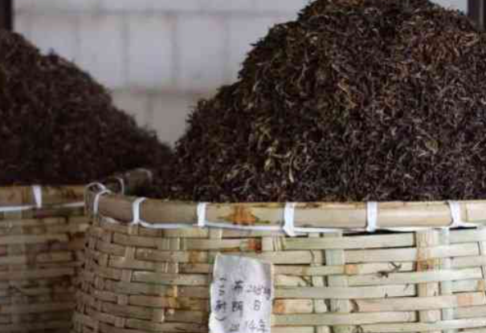
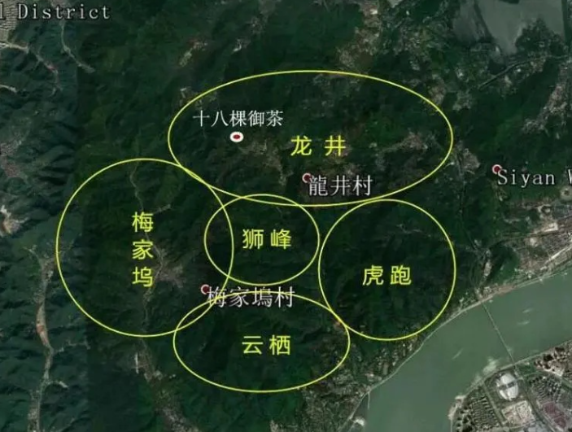
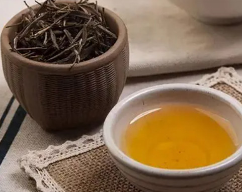
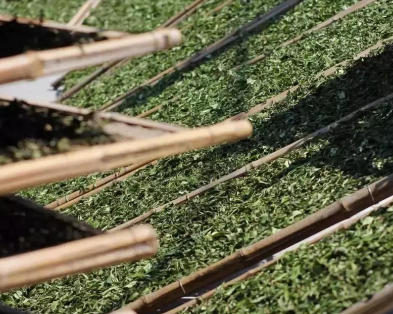
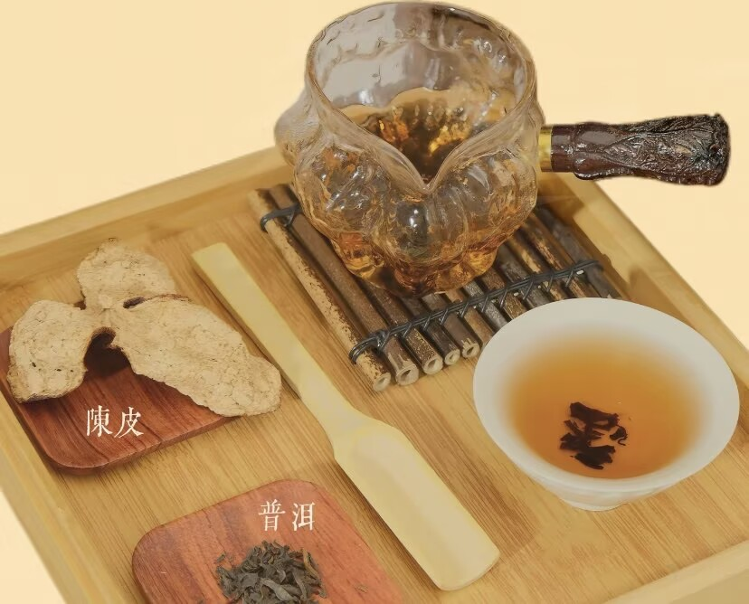
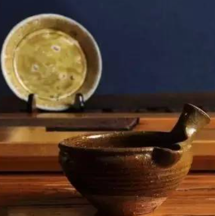

聚焦非遗茶技艺、茶疗养生、茶器文化等细分领域，深度探索茶文化精髓

普洱茶熟茶的人工渥堆发酵是核心工艺，控制温度、湿度和翻堆次数，决定熟茶的口感和品质。

西湖龙井分为狮峰、龙井、云栖、虎跑、梅家坞五大核心产区，不同产区的龙井风味各有特色。

乌龙茶品鉴先闻干茶香，再闻湿茶香，最后品茶汤香，不同香型的乌龙茶品鉴重点不同。

白茶不炒不揉，核心是自然萎凋，控制萎凋时间和环境湿度，保留茶叶的天然营养和清甜口感。

陈皮理气健脾，普洱熟茶暖胃降脂，二者结合成经典养生茶方，适合日常调理。

从唐代越窑青瓷茶瓯到宋代建窑黑釉盏，茶器形制随饮茶方式演变，折射出不同时代的审美风尚与文人意趣。